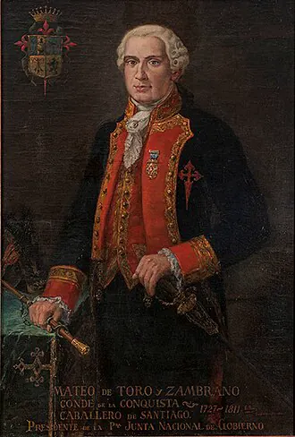

Primera Junta Nacional de Gobierno

En 1808, Napoleón Bonaparte invadió España y obligó a Fernando VII a abdicar. En toda Hispanoamérica surgió la pregunta de quién debía ejercer la soberanía en ausencia del rey. En Chile, el gobernador Francisco Antonio García Carrasco perdió apoyo tras una serie de abusos y arrestos de vecinos destacados, y renunció en julio de 1810. Lo reemplazó el anciano criollo Mateo de Toro y Zambrano, conde de la Conquista, quien, presionado por la élite de Santiago, convocó a un cabildo abierto el 18 de septiembre de 1810 en el edificio del Real Tribunal del Consulado.
Allí se formó la Primera Junta Nacional de Gobierno, presidida por Toro y Zambrano y con figuras como Juan Martínez de Rozas. La junta juró fidelidad a Fernando VII y se declaró provisoria, pero en la práctica fue el primer gobierno autónomo criollo. Decretó la libertad de comercio en 1811, organizó milicias y convocó al primer Congreso Nacional, abriendo La Patria Vieja. Los historiadores debaten si fue un acto de lealtad al rey o un primer paso consciente hacia la Independencia; probablemente ambas intenciones convivían entre sus miembros.
Versión para niños
En 1808, el rey de España fue tomado prisionero por Napoleón, el emperador de Francia. En Chile, muchos se preguntaron: ¿quién debe gobernar si no está el rey? El 18 de septiembre de 1810, los vecinos más importantes de Santiago se reunieron en un cabildo abierto y formaron una junta de gobierno. Prometieron cuidar el país en nombre del rey, pero ese día comenzó el camino hacia la Independencia.
Para maestros
Nivel sugerido: 6° básico
Objetivo: Explicar las causas externas e internas de la formación de la Primera Junta y distinguir entre autonomía e independencia.
Preguntas para la clase:
- ¿Por qué la prisión del rey de España afectó a Chile?
- ¿Por qué la Junta juró fidelidad a Fernando VII si después Chile se independizó?
- ¿Quiénes participaron en el cabildo abierto y quiénes quedaron fuera?
Actividad (20–30 min): Línea de tiempo colaborativa de 1808 a 1818 con los hechos principales ocurridos en Europa y en Chile. Luego, cada estudiante responde por escrito por qué el 18 de septiembre se celebra como fiesta nacional.
Fuentes sugeridas: Memoria Chilena; Biblioteca Nacional Digital; Museo Histórico Nacional; Biblioteca del Congreso Nacional (BCN).
Objetivos de Aprendizaje (Currículum Nacional)
- 1° básico · HI01 OA 05 Reconocer los símbolos representativos de Chile … conmemoraciones nacionales (como Fiestas Patrias, Día del Descubrimiento de dos mundos y Combate Naval de Iquique)
- 6° básico · HI06 OA 01 Explicar los múltiples antecedentes de la independencia de las colonias americanas y reconocer que la independencia de Chile se enmarca en un proceso continental
- 6° básico · HI06 OA 02 Explicar el desarrollo del proceso de independencia de Chile … el cabildo abierto de 1810 y la formación de la Primera Junta Nacional de Gobierno
- 8° básico · HI08 OA 16 Explicar la independencia de las colonias hispanoamericanas como un proceso continental … y analizar en este marco el proceso de Independencia de Chile
Revisión humana pendiente. Cómo se revisa · Reportar un error
Cómo citar: Historia de Chile. (2026). Primera Junta Nacional de Gobierno. En Historia de Chile: atlas y línea de tiempo. https://moises-salgado.github.io/historia-de-chile/momento/primera-junta-nacional-de-gobierno.html